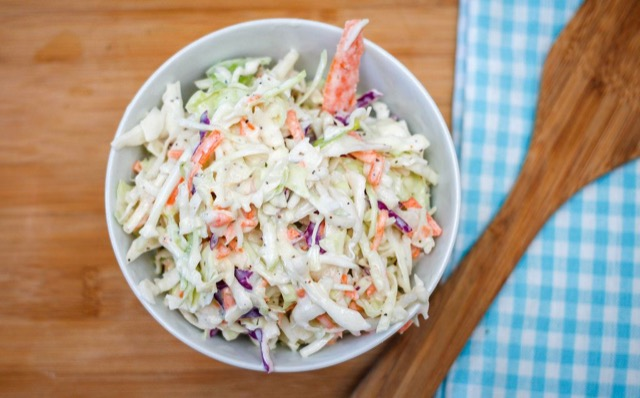

Coleslaw

Image: 'Coleslaw in a white Bowl Top View' by Marco Verch is licenced under CC BY 2.0
Description
A yummy salad, especially with hamburgers!
Ingredients
- 1 cabbage
- 2 carrots
- 1/2 cup mayonnaise
- 1/4 cup creme fraiche
- 2 tsp. apple vinegar
- 1 T Dijon mustard
- a pinch of salt
Steps
- Cut cabbage in half and rinse it well. Slice it into small pieces.
Peel and grate carrots.
- Mix mayonnaise, creme fraiche, apple vinegar, mustard, and salt.
The sauce should have a strong, sweet, and acidic taste.
- Put the vegetables in a large bowl and mix them well
with the sauce.
- Put the salad in the fridge overnight, or at least for a couple of hours.
Back